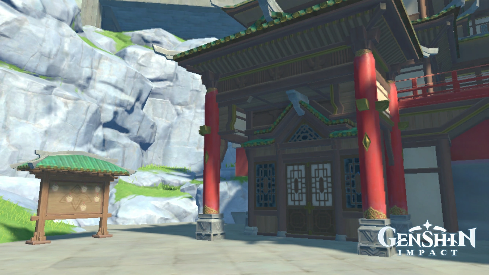
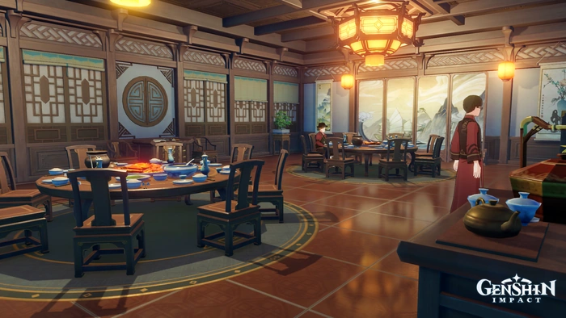
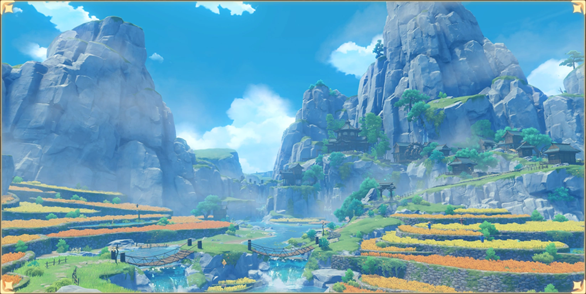
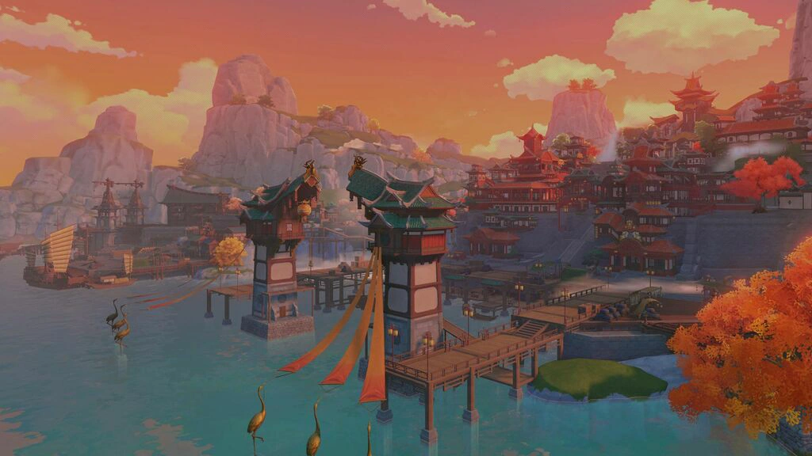

Liyue
Liyue, la Ciudad o Nación de los Contratos, es la segunda de las siete naciones de Teyvat. Representa el elemento Geo y estába protegida por el Arconte Rex Lapiz o Morax. Una ciudad con un puerto próspero situado al este de Teyvat. Liyue yace imponente entre faldas montañosas, bosques de piedra, bastas planicies y una costa llena de vida, que conforman una tierra llena de riquezas, con cambios de estación claramente definidos y llenos de color. ¿Cuántos obsequios del Arconte Geo yacerán enterrados entre sus montañas?
Más detalles
La Ciudad De Liyue
Liyue es una nación libre "gobernada" por Las Siete Estrellas de Liyue. La influencia de Rex Lapiz, el Arconte Geo,se basaba en proteger a Liyue en base de contratos o fuerza bruta en casos de emergencia.

La Camara de Jade
Uno de los sitios más emblemáticos de la nación es la Camara de Jade que se encuentra en lo alto de la ciudad, un lugar que se deberia de visitar y que será de impotancia para la Trama.

Funeraria "El Camino"
La Funeraria "El Camino" es una organización con sede en Liyue. Además de enterrar a los muertos, también realizan ritos funerarios. La Funeraria El Camino tiene vínculos con los Fatui; según ellos... aparentemente no llevan a cabo turbias ofertas de trastienda como el asesinato. Sin embargo, su diálogo sugiere que la organización mantiene una relación cercana.
Restaurante Wanmin
Un restaurante famoso en el Peñasco Chihu. Algunos dicen que el objetivo de este restaurante es mantener a todo el mundo en la tierra bien alimentado, mientras que otros creen que se esfuerza por unificar toda la cocina regional del mundo. De cualquier manera, con sus platos únicos, el Restaurante Wanmin es seguramente un lugar que vale la pena visitar. Si tienes prisa, ¿por qué no tomas algo de comida para llevar?

Quiosco Xinyue
El Quiosco Xinyue es un famoso restaurante en el Puerto de Liyue, Liyue. Se encuentra frente a Joyas Mingxing, y se ingresa acercándose a la puerta junto a Yueshu. La parte superior del restaurante se encuentra frente al Banco del Reino del Norte y arriba de la Casa de Té Heyu, aunque no hay manera de ir entre ellos desde el interior del restaurante. El Quiosco Xinyue es reconocido como el restaurante más auténtico de cocina del estilo Yue, al igual que el Pabellón Liuli con su estilo de cocina Li. Como resultado, los platos del Quiosco Xinyue son principalmente a base de mariscos, que es la especialidad de la cocina Yue. Francis menciona que el Camarón de cristal, el Cangrejo dorado y los Rollitos de luna llena entre las ofertas del menú del restaurante. Debido a su gran reputación, el Quiosco Xinyue es bastante caro para cenar y tiene una lista de espera de tres meses.
La Posada Wangshu
La Posada Wangshu es una subárea en el Pantano Dihua, Liyue. Se trata de una posada construida sobre un gran árbol en el camino hacia Mondstadt. Tal y como su nombre lo indica es una posada en donde podrás pasar unas vacaciones en es el lugar si estas de visita a Liyue, con unas vistas espectaculares.

La Aldea Chingsté
La Aldea Chingsté ,es un pueblo situado en la Llanura Bishui, Liyue. Debido a la tranquilidad, muchas personas se alejaron en favor de otros lugares, dejando en su mayoría a personas mayores cuidando a sus nietos.
Puerto de Liyue
El Puerto de Liyue es un lugar en el cual se logra diferir diferentes comercios entre las naciones de todo Teyvat, controlado por el Comercio de Asuntos Civiles de Liyue.
Valle Chengyu y la Sima e El Rito de la Linterna= Extra: Lugares de Adeptus
Proximamente...
Personajes e ¿Historia?
Proximamente...
Musica, Dominios, Jefes y artefactos
Proximamente...